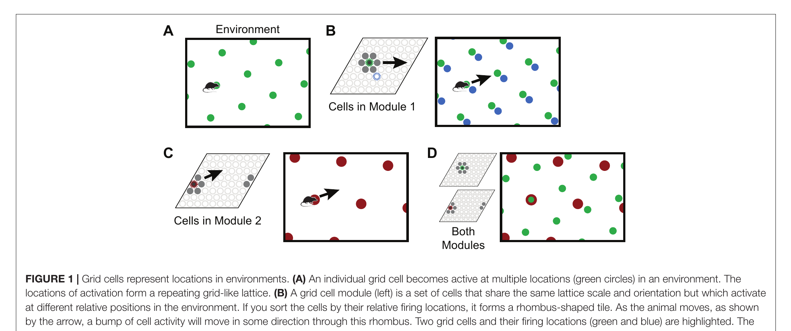

An interactive companion to Locations in the Neocortex: A Theory of Sensorimotor Object Recognition Using Cortical Grid Cells (Lewis, Purdy, Ahmad & Hawkins, 2019). Move a sensor around an environment and watch how a handful of grid-cell modules — each a small wrapping rhombus of cells — combine into a sparse code that pins down location uniquely.
In the entorhinal cortex, grid cells fire at a repeating triangular lattice of locations as an animal moves. A grid cell module is a population of grid cells that share one lattice scale and orientation; what differs between them is the relative position at which each fires. Sort the cells by that relative position and a module collapses into a small rhombus-shaped tile with a single bump of activity. Because the lattice repeats, one module cannot say where you are — the same bump recurs all over the environment. But the paper's central move is this: stack several modules with different scales and orientations, and the combination of their bumps almost never repeats. A few small, ambiguous codes multiply into one large, sparse, essentially unique code for location — and movement updates it through path integration. This page lets you build that code by hand.
Each module is a low-resolution, wrap-around ruler. No single ruler is enough. Read several rulers of different scale and tilt at once and only one location in the whole environment is consistent with all of them — like reading a vernier scale, or the hands of a clock.
Three views of the same set of cells. The module's cells tile the world in a repeating lattice (left); if you re-sort them by their relative firing position they form a rhombus with one Gaussian bump (middle); threshold that bump and you get a tiny binary SDR (right). The interactive demo below shows all three live.
This is Figure 1 from the paper itself. (A) a single grid cell fires at a repeating lattice; (B) sort a module's cells and they form a rhombus tile with one bump — movement shifts the bump, and it wraps at the edges; (C) a second module tiles the same space at a larger scale and different orientation, so the same movement shifts its bump differently; (D) superimpose the modules and only one location is consistent with both — where green and red coincide.

Drive the sensor around the arena with the arrow pad (or ↑↓←→ / WASD, or click in the arena). Each module shows its rhombus with the live Gaussian bump and the SDR it thresholds to. The three SDRs concatenate into the final location code at the bottom. Hit New seed to re-roll the random starting bumps — exactly what each module does when it enters a new environment. Collapse a module (or use Collapse modules) to shrink the panel; the equations behind every pixel are in the math section below.
Per module you control: scale \(s_i\) (lattice spacing in the arena — bigger = coarser ruler), orientation \(\theta_i\), cells \(w\) (the SDR has \(w^2\) bits), and readout \(\delta\varphi\) (smaller = sharper, sparser bump). "Distinguishable phases" is \(\approx(1/\delta\varphi)^2\) — the number of locations one module can resolve before it repeats. The combined capacity multiplies across modules, which is why a few small modules represent so much.
Everything the demo just did reduces to a handful of equations. A module's whole state is a 2-D phase \(\vec{\varphi}\in[0,1)\times[0,1)\) — where the bump sits in the rhombus.
Each module owns a 2×2 matrix \(M_i\) built from its scale \(s_i\) and orientation \(\theta_i\). It turns a movement of the sensor in the world into a movement of the bump, baking in the 60° lattice geometry:
mod 1Applying Eq. (4) step after step just sums the displacements, so the bump's phase has a tidy closed form: \(\vec{\varphi}^{\,i}(\vec{x}) = \big(\vec{\varphi}^{\,i}_0 + M_i(\vec{x}-\vec{x}_0)\big)\bmod 1\). The demo computes phase straight from the sensor's position. A neat consequence: the code at a place is independent of the path you took to get there — wander off and come back and the SDR is identical.
Each cell \(c\) sits at a fixed phase \(\vec{\varphi}_c\) (the module is partitioned into \(w\times w\) equal tiles). A cell's scalar activation is a Gaussian of its distance to the bump \(b\), measured on the rhombus (so it wraps around the edges):
A cell is part of the SDR when its activation clears a threshold set by the readout resolution \(\delta\varphi\) — roughly the diameter of phases one bump should stand for:
With a single bump, \(\sigma\) drops out of which cells turn on: the threshold is just "distance \(\le \delta\varphi/\sqrt3\)", so \(\delta\varphi\) alone controls sparsity. \(\sigma\) only shapes the colourful gradient you see, and starts to matter once a module holds a union of several bumps (Eq. 12, \(a_c = 1-\prod_b(1-a_{c,b})\)). This demo shows one bump per module, as you asked — but the same machinery represents uncertainty as a union. The paper's baselines are \(\sigma=0.18172\), \(\delta\varphi=\tfrac13\), and \(6\times 6\) cells, which lights up 4–7 cells per bump.
location_modules.py
in Numenta's htmresearch. The demo follows its activationsForPhase
/ threshold logic (Eqs. 10–14) and movement update (Eqs. 3–5).